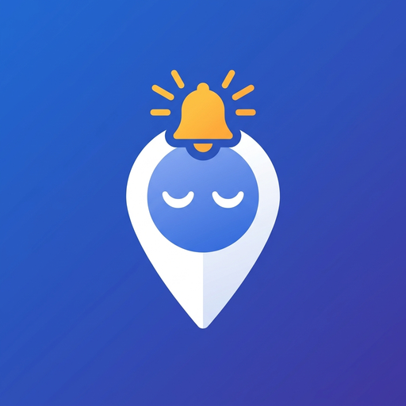

Политика конфиденциальности · Privacy Policy · Купуялык саясаты
Обновлено: 23 сентября 2026 года.
«Не проспи» — будильник, который звонит, когда вы подъезжаете к нужной остановке. Приложение работает без регистрации и не создаёт учётных записей.
Во время поездки приложение получает координаты GPS, чтобы посчитать расстояние до выбранной точки и вовремя зазвонить. Координаты обрабатываются на самом телефоне. Они не сохраняются на сервере и никуда не отправляются, кроме одного случая, описанного ниже.
Чтобы показать карту, найти адрес и отметить остановки, приложение обращается к открытым сервисам OpenStreetMap: тайловым серверам карты, Nominatim (поиск и название точки) и Overpass (остановки транспорта). При этом им передаётся то, что вы ищете, и участок карты, который вы смотрите. Эти сервисы принадлежат сторонним организациям и действуют по своим правилам: osmfoundation.org/wiki/Privacy_Policy. Если скачать офлайн-карту своей страны, обращений к карте в интернете не будет.
Всё это лежит только в памяти приложения на вашем телефоне. Удаление приложения удаляет эти данные полностью.
Если вы включили эту возможность и ввели номер, приложение готовит текст и показывает уведомление. Сообщение отправляете вы сами: нажатие открывает ваше обычное SMS-приложение с готовым текстом. Приложение не имеет разрешения на отправку SMS и не отправляет их без вас. Стоимость сообщения — по тарифу вашего оператора.
Приложение не предназначено специально для детей и не собирает данные о них.
Если политика изменится, новая версия появится на этой странице с новой датой.
Вопросы и жалобы: sgoo0931@gmail.com. Исходный код открыт: github.com/Emirkhan-Sharshenov/ne_prospi_app.
Last updated: 23 September 2026.
Don’t Oversleep is an alarm that rings when you are approaching your stop. It works without registration and creates no accounts.
During a trip the app reads GPS coordinates to measure the distance to your destination and ring in time. Coordinates are processed on the phone itself. They are not stored on any server and are not sent anywhere, except for the one case described below.
To draw the map, find an address and show transit stops, the app contacts the open OpenStreetMap services: map tile servers, Nominatim (search and place names) and Overpass (transit stops). Your search text and the map area you are viewing are sent to them. These services belong to third parties and follow their own rules: osmfoundation.org/wiki/Privacy_Policy. Downloading an offline map of your country removes these requests.
All of it stays in the app’s own storage on your phone. Uninstalling the app deletes it completely.
If you enable this and enter a number, the app prepares the text and shows a notification. You send the message yourself: tapping it opens your usual SMS app with the text ready. The app holds no SMS permission and never sends anything without you. Your carrier’s rates apply.
The app is not directed at children and collects no data about them.
If this policy changes, the new version will appear on this page with a new date.
Questions and complaints: sgoo0931@gmail.com. The source code is open: github.com/Emirkhan-Sharshenov/ne_prospi_app.
Жаңыланды: 2026-жылдын 23-сентябры.
«Уктап калба» — керектүү аялдамага жакындаганда шыңгыраган ойготкуч. Колдонмо катталуусуз иштейт жана эч кандай эсеп түзбөйт.
Сапар учурунда колдонмо GPS координаттарын алат: тандалган чекитке чейинки аралыкты эсептеп, өз убагында шыңгыратуу үчүн. Координаттар телефондун өзүндө иштетилет. Алар серверде сакталбайт жана эч жакка жөнөтүлбөйт — төмөндө айтылган бир учурдан тышкары.
Картаны көрсөтүү, даректи табуу жана аялдамаларды белгилөө үчүн колдонмо ачык OpenStreetMap кызматтарына кайрылат: карта серверлерине, Nominatim (издөө жана чекиттин аты) жана Overpass (коомдук транспорт аялдамалары). Аларга сиз издеген текст жана кароодогу карта аймагы жөнөтүлөт. Бул кызматтар башка уюмдарга таандык жана өз эрежелери боюнча иштейт: osmfoundation.org/wiki/Privacy_Policy. Өлкөңүздүн офлайн картасын жүктөп алсаңыз, картага интернет аркылуу кайрылуу болбойт.
Мунун баары телефонуңуздагы колдонмонун эстутумунда гана турат. Колдонмону өчүрүү бул маалыматты толугу менен жок кылат.
Бул мүмкүнчүлүктү күйгүзүп, номер киргизсеңиз, колдонмо текстти даярдап, билдирме көрсөтөт. Кабарды өзүңүз жөнөтөсүз: басканда кадимки SMS колдонмоңуз даяр текст менен ачылат. Колдонмодо SMS жөнөтүүгө уруксат жок, ал сизсиз эч нерсе жөнөтпөйт. Кабардын баасы операторуңуздун тарифи боюнча.
Колдонмо атайын балдарга арналган эмес жана алар жөнүндө маалымат чогултпайт.
Саясат өзгөрсө, жаңы нускасы ушул бетте жаңы дата менен чыгат.
Суроолор жана арыздар: sgoo0931@gmail.com. Баштапкы код ачык: github.com/Emirkhan-Sharshenov/ne_prospi_app.